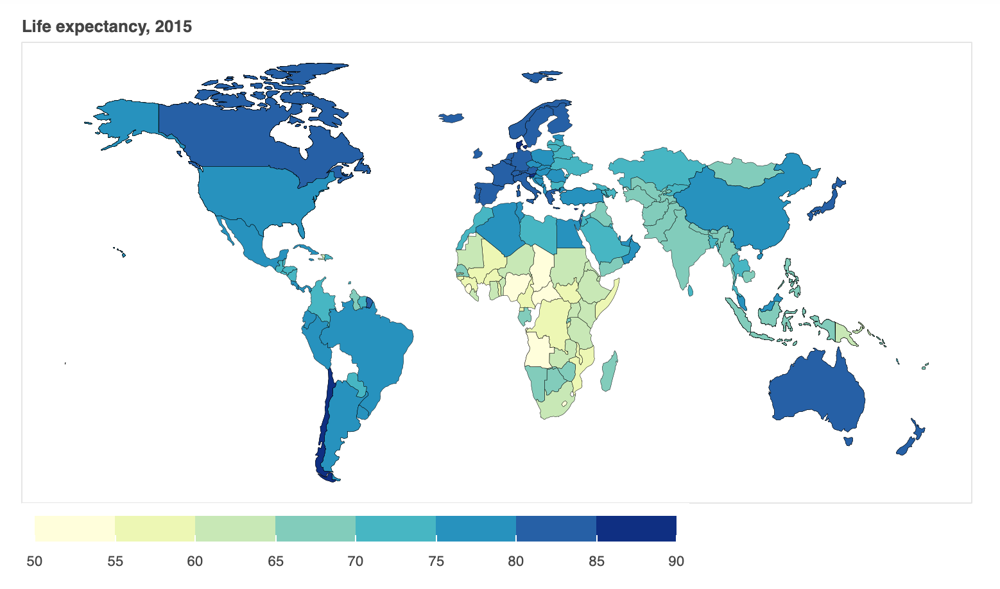

Basic geo-mapping with Geopandas and Bokeh
Geo-maps are very helpful in visualizing geographical data. In order to create geo-maps, we need the shape files. You can download such shape files here. We will be plotting life expectancy data over our map from WHO record. You can find such datasets from Kaggle. You can also find a copy of the CSV file that we will be using here.
import pandas as pd
import geopandas as gpd
import json
from bokeh.io import output_notebook, show, output_file
from bokeh.plotting import figure
from bokeh.models import GeoJSONDataSource, LinearColorMapper, ColorBar
from bokeh.palettes import brewer
# Load the shapefile, we are only loading necessary columns
gdf = gpd.read_file("/Users/Pranab/Desktop/map-data/\
ne_110m_admin_0_countries.shp")[['ADMIN', 'geometry']]
# rename the columns
gdf.columns = ['Country', 'geometry']
# load life expectancy data
life_expectancy = pd.read_csv("~/Desktop/Life-Expectancy-Data.csv")
# choose only life expectancy data
life_expectancy = life_expectancy[['Country', 'Year', 'Life expectancy ']]
# choose only data for 2015
life_expectancy = life_expectancy.loc[life_expectancy['Year'] == 2015]
# Merge dataframes gdf and life_expectancy
merged = gdf.merge(life_expectancy, left_on = 'Country', right_on = 'Country')
# Read data to json
merged_json = json.loads(merged.to_json())
# Convert to String like object
json_data = json.dumps(merged_json)
# Input GeoJSON source that contains features for plotting
geosource = GeoJSONDataSource(geojson = json_data)
# Define a sequential multi-hue color palette
palette = brewer['YlGnBu'][8]
# Reverse color order
palette = palette[::-1]
# Instantiate LinearColorMapper that linearly maps numbers in a range
color_mapper = LinearColorMapper(palette = palette, low = 50, high = 90)
# Define custom tick labels for color bar
tick_labels = {'50': '50', '55': '55', '60':'60', '65':'65', \
'70':'70', '75':'75', '80':'80','85':'85', '90': '90'}
# Create color bar
color_bar = ColorBar(color_mapper = color_mapper, label_standoff = 8,\
width = 500, height = 20,
border_line_color=None,location = (0,0), orientation = 'horizontal', \
major_label_overrides = tick_labels)
# Create figure object
p = figure(title = 'Life expectancy, 2015', plot_height = 450 , \
plot_width = 750, toolbar_location = None)
p.xgrid.grid_line_color = None
p.ygrid.grid_line_color = None
# Add patch renderer to figure
p.patches('xs','ys', source = geosource,fill_color = {'field' :\
'Life expectancy ', 'transform' : color_mapper},\
line_color = 'black', line_width = 0.25, fill_alpha = 1)
# Specify figure layout
p.add_layout(color_bar, 'below')
p.axis.visible = False
# Display figure inline in Jupyter Notebook
output_notebook()
show(p)
